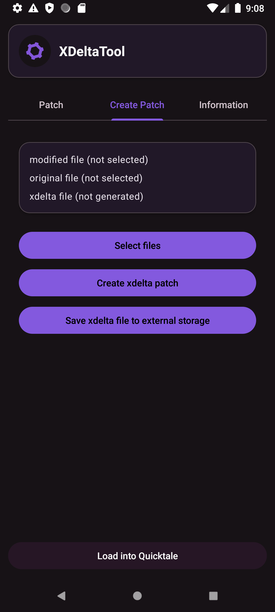

To patch a file, go to the Patch tab in the app.
Tap the Select Files button. An alert dialog will appear:
Once both files are selected, tap Patch.
To save the patched file, press Save Patched File.
Go to the Create Patch tab.
Tap the Select Files button. A dialog will appear:
Then tap Create XDelta Patch.
To save the new patch, press Save XDelta File to External Storage.
After saving, the app may offer to clear its cache. This is optional but recommended.